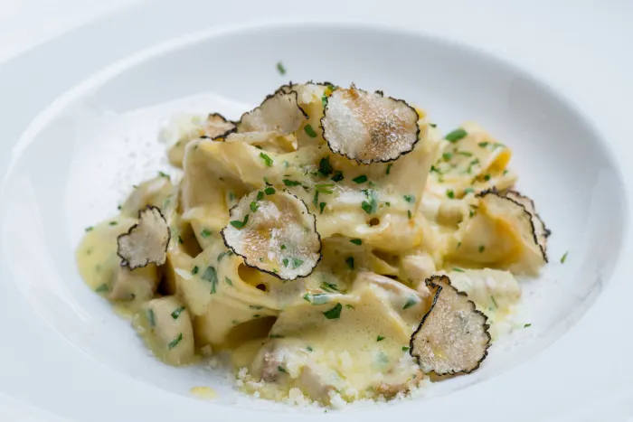
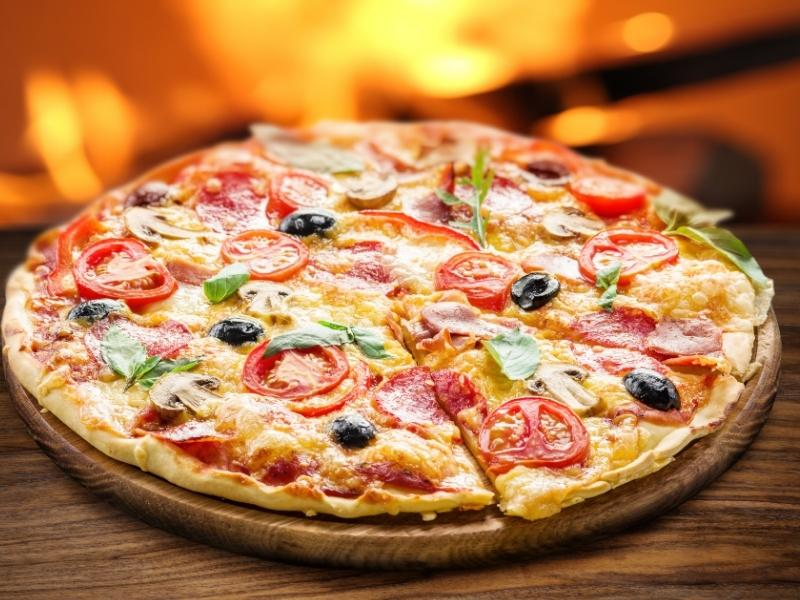
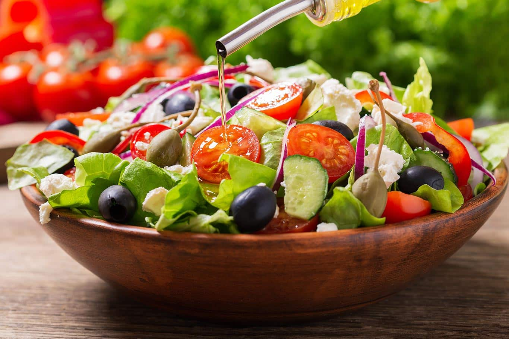
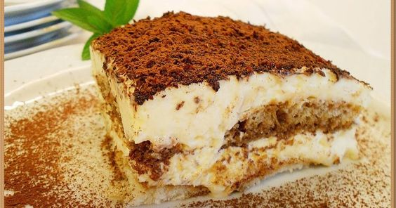

Descubre la auténtica tradición italiana con nuestra selección de antipastos. Desde los sabores intensos del salami y la prosciutto hasta la suavidad del queso Parmigiano Reggiano, cada bocado es un deleite para los amantes de la cocina italiana. ¡Embárcate en un viaje gastronómico y déjate seducir por la pasión culinaria de Italia

Saborea la perfección en cada plato con nuestras exquisitas combinaciones de pasta y salsas caseras. Una experiencia gastronómica que te hará sentir como en el corazón de Roma
Descubre el sabor auténtico de Italia en cada mordisco! Nuestras pizzas artesanales están cuidadosamente elaboradas con ingredientes frescos y de la más alta calidad. Deléitate con una explosión de sabores en cada rebanad
Refréscate y nutre tu cuerpo con nuestras ensaladas frescas y vibrantes. Cada crujiente bocado está lleno de colores, sabores y nutrientes que te harán sentir bien desde adentro. Descubre la armonía perfecta de ingredientes frescos y aliños irresistibles en cada ensalada que preparamos. ¡Una explosión de frescura en cada plato
Sumérgete en un mundo de dulzura con nuestros irresistibles postres. Desde exquisitos pasteles hasta delicadas creaciones, cada bocado te transportará a un paraíso de sabores. ¡Endulza tu día con nuestros deliciosos caprichos
Sumérgete en el aroma y sabor inigualables de nuestro café premium. Cada taza es una experiencia cautivadora, con notas exquisitas que deleitarán tus sentidos. Disfruta de la perfección en cada sorbo y déjate envolver por el cálido abrazo de nuestra pasión por el café. ¡Descubre un mundo de placer en cada taza